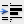

Visual Studio Image Library: Actions (32-Bit, .bmp Format, 24x24)
32-Bit Art
This is 32-bit art that contains an alpha channel for transparency.
Use Restrictions
Action icons are used to represent commands in the menu structure. These are
most often action verbs, but sometimes are nouns (objects or tools) with actions
associated with them, such as Hide or Show. As part of a visual language, the following images
(or any part of the images) should be
used consistent with, although not necessarily identical to, the usage described
below:
| Image | File Name | Usage |
|---|---|---|
| Color_fillHL.bmp | Choose a color to fill the selected area | |
| CopyHL.bmp | Make a copy | |
| CutHL.bmp | Cut to clipboard | |
| Edit_redoHL.bmp | Redo an action | |
| Edit_undoHL.bmp | Undo an action | |
| eps_openHL.bmp | Indicate correspondence that has been previously viewed | |
| FolderHL.bmp | Display or create a folder | |
| FontColorHL.bmp | Choose a font (foreground) color | |
| FullScreenHL.bmp | Go into visible mode which maximizes real estate for viewing or editing | |
| GraphHL.bmp | Display a graph | |
| HighlightHL.bmp | Mark elements or words with highlight | |
| IndentHL.bmp | Indent selection | |
|  | IndentPL.bmp | Indent selection (gray background, no alpha channel) |
| InsertPictureHL.bmp | Insert a picture | |
| LandscapeHL.bmp | Horizontal layout | |
| OpenHL.bmp | Open | |
| OpenPL.bmp | Open (gray background, no alpha channel) | |
| OutdentHL.bmp | Outdent selection | |
| OutdentPL.bmp | Outdent selection (gray background, no alpha channel) | |
| PasteHL.bmp | Paste from clipboard | |
| PortraitHL.bmp | Vertical format | |
| PreviousPageHL.bmp | Display or move to previous page | |
| PrintPreviewHL.bmp | Launch UI to allow for previewing printer results | |
| SaveHL.bmp | Save | |
| TaskHL.bmp | Object: task or display list of tasks | |
| WebInsertHyperlinkHL.bmp | Insert a hyperlink |